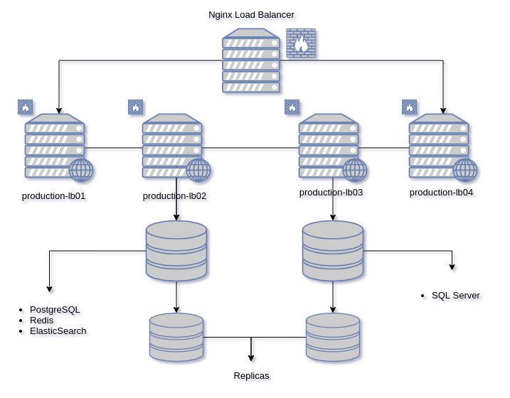

Ansible
Table of Contents
This repository is a collection of ansible playbooks implemented by Vertilux’s IT dept to perform some server automations.
Getting Started
Make sure ansible is installed on your machin, to install ansible:
Install ansible on Mac
brew install ansible
Install ansible on Windows
Probably the best option is to installed Ubuntu on WSL (Windows Subsytem for Linux).
- Search for Windows features in the search box. And when the “Turn Windows features on or off ” appears, click on that.
- A window will open with a bunch of features. Scroll down and check the box of Windows Subsystem for the Linux option. And after that, click on the OK button.

- Open the Microsoft Store and search for Ubuntu to install the latest version.
- After the installation, you will see a launch button, use that to open the Ubuntu bash.
- On Ubuntu bash, it will ask you to set the username and password for the default user. You can also set the root account password from here by typing
sudo passwd root
Now install ansible and press Y when ask for.
sudo apt-get update sudo apt-get install software-properties-common sudo apt-add-repository ppa:ansible/ansible sudo apt-get update sudo apt-get install ansible
Clone the repository.
git clone git@github.com:vertilux/ansible.git
Then cd into the ansible directory: $ cd ansible
ERP
Deploy
This playbook contains multiples roles to deploy new versions or ERP updates to production.

To avoid password authetication generate a public key and copy to the remote servers.
To create the SSH keys, type ssh-keygen -t rsa -C "your_email@example.com". This will create both id_rsa and id_rsa.pub files.
Copy the generated public key to the remote host
cat ~/.ssh/id_rsa.pub | ssh user@remote_host 'cat >> .ssh/authorized_keys'
Additioanlly disable password requirement for sudo.
Create a file in /etc/sudoers.d/deploy
deploy ALL=(ALL) NOPASSWD:ALL
Entry point
This playbook execute the different roles that will run
ansible-playbook entry_point.yml -i inventory
Roles
| description | commands |
|---|---|
| app-update | Will check if directory exist then is going to clone or pull from version control (Github) |
yarn install |
|
bundle |
|
RAILS_ENV={{env}} rake assets:precompile |
|
| run-migrations | RAILS_ENV={{env}} rake db:migrat |
| restart-sidekiq | sudo service sidekiq-{{env}} restart |
| restart-nginx | sudo service sidekiq-{{env}} restart |
Playbooks
A collections o simple playbooks to perform different tasks for the ERP Web Application.
Ping
Try to connect to host, verify a usable python and return pong on success.
ansible-playbook ping.yml -i inventory
Sidekiq
Background processing for ruby. Sidekiq uses threads to handle jobs at the same time in the same process. It is integrated tightly with Rails to make background processing dead simple.
- Provision Service
Running sidekiq as a system service with systemd, this will ensure the process is restarted if Sidekiq crashes. Here is an example systemd file:
[Unit] Description=sidekiq After=syslog.target network.target [Service] Type=simple WorkingDirectory=/home/deploy/APP_LOCATION/current ExecStart=/home/deploy/.rbenv/shims/bundle exec sidekiq -e ENVIRONMENT User=deploy Group=deploy UMask=0002 # Greatly reduce Ruby memory fragmentation and heap usage # https://www.mikeperham.com/2018/04/25/taming-rails-memory-bloat/ Environment=MALLOC_ARENA_MAX=2 # if we crash, restart RestartSec=1 Restart=on-failure # output goes to /var/log/syslog StandardOutput=syslog StandardError=syslog # This will default to "bundler" if we don't specify it SyslogIdentifier=sidekiq [Install] WantedBy=multi-user.target
With the following playbook the service is provision on all servers.
ansible-playbook sidekiq_service.yml -K -i inventory.yml
- Restart Sidekiq
ansible-playbook restart-sidekiq.yml -K -i inventory.yml
Nginx Webserver
Nginx is a web server that can be used as a reverse proxy, load balancer and HTTP cache.
- Append Nginx Configuration
This playbook will append a configuration block to the default configuration with the env passed. This is the easy way to when deploying a new distribution center.
ansible-playbook append-nginx-config.yml -K -i inventory.yml
- Restart Nginx
Simply restart nginx on all servers excluding load labancer.
ansible-playbook restart-nginx.yml -K -i inventory.yml
- Restart passenger
Phusion Passenger is an open source web application server. It handles HTTP requests, manages processes and resources, and enables administration, monitoring and problem diagnosis.
ansible-playbook restart-passenger.yml -i inventory.yml
This playbook displays a prompt to enter the environment to be restarted, with this option you can restart only one environment (distribution center app).
Logrotate
Configuring Logrotate For Rails Production Logs.
Running ansible-playbook append-logrotate.yml --extra-vars "env=ENV" -K -i inventory.yml will edit sudo vim /etc/logrotate.conf, and at the bottom of the file the following block of code (change the ENV, ex: accltd):
/home/deploy/erp-ENV/current/log/*.log {
daily
missingok
rotate 7
compress
delaycompress
notifempty
copytruncate
}
ansible-playbook append-logrotate.yml -K -i inventory.yml
How it works:
- daily – Rotate the log files each day.
- missingok – If the log file doesn’t exist, ignore it.
- rotate 7 – Only keep 7 days of logs.
- compress – GZip the log file on rotation.
- delaycompress – Rotate the file one day, then compress it the next day so we can be sure that it won’t interfere with the Rails server.
- notifempty – Don’t rotate the file if the logs are empty.
- copytruncate – Copy the log file and then empties it.
Running Logrotate: Then the playbook will run: `sudo /usr/sbin/logrotate -f /etc/logrotate.conf`
Maintenance
Sometimes there is a need to set the ERP Web application into maintenance mode; when an item change needs to be run or when the we need to upgrade Sage. For this scenarios the folloging playbook is the easier way to set all instances in maintenance mode.
Set only one distribution center to maintenance mode.
ansible-playbook maintenance-mode.yml -K -i inventory.yml
Put everything into maintenance.
ansible-playbook maintenance-mode-all.yml -K -i inventory.yml
Append Env Variable
Environment variables are a set of dynamic named values, stored within the system that are used by applications launched. In simple words, an environment variable is a variable with a name and an associated value.
- Persistent Env Variables
To make Environment variables persistent you need to define those variables in the bash configuration files. In most Linux distributions when you start a new session, environment variables are read from the following files:
/etc/environment: Use this file to set up system-wide environment variables. Variables in this file are set in the following format:FOO=bar VAR_TEST="Test Var"
/etc/profile: Variables set in this file are loaded whenever a bash login shell is entered. When declaring environment variables in this file you need to use the export command:export FOO="bar" export VAR_TEST="Test Bar"
For our apps we used
/etc/profile, to add (append) a new env variables just need to run the following playbook:ansible-playbook append-env-variable.yml -K -i inventory.yml
Provision
Provision ERP is a collection of ansibles roles to make easy the setup of multiples environments. Every environemnt is a distribution center, this approach makes us use the same code for all distribution centers and easy to maintain.
Running playbooks
ansible-playbook entry_point.yml -i inventory.yml -k -K
Entry point is the main playbook, this is going to ask for:
- User name.
- Environment (Sage300 SQL server name lowecase).
- URL (DNS url for the application, Ex: erp.vertilux.com).
- Port (SQL server port set on firewall rule).
Roles
- set-config-files
- append-nginx-config
- set-sidekiq-service
- logrotate
Tower
A collections of playbooks to perform tasks with the tower web interface.
QNAP
Usefull playbook collection to perform tasks on the QNAP NAS.
Remove old SQL backups
ansible-playbook remove-old-sql-backups.yml -i
Windows Management
Ansible Windows module uses winrm connection, in order to execute commands in the Windows machine.
Why Automate Windows Hosts?
A few of the many things you can do for your Windows hosts with Ansible.Windows include:
- Starting, stopping and managing services
- Pushing & executing custom PowerShell scripts
- Reboot multiples machines simultaneously
For a complete list of Ansible.Windows modules visit this link.
What’s Required?
First, the control machine (where Ansible will be executing your Windows modules from) needs to run Linux. Second, Windows support has been evolving rapidly, so make sure to use the newest possible version of Ansible to get the latest features!
For the target hosts, you should be running at least Windows 7 SP1 or later or Windows Server 2008 SP1 or later.
Lastly, since Ansible connects to Windows machines and runs PowerShell scripts by using Windows Remote Management (WinRM) (as an alternative to SSH for Linux/Unix machines), make WinRM is activated.
Trobleshooting WinRM
Sometimes we get an error plaintext: the specified credentials were rejected by the server and the reason it’s not the credentials as I know they are correct. It must be some other authentication issue.
The problem is that it is sending credentials in plaintext over the unencrypted WinRM port 5985. The fix is a couple of WinRM configuration changes in the Windows servers. In an elevated command prompt type the following commands:
Sets WinRM to Basic Authentication
winrm set winrm/config/service/auth '@{Basic="true"}'
Auth
Basic = true
Kerberos = true
Negotiate = true
Certificate = false
CredSSP = false
CbtHardeningLevel = Relaxed
Sets WinRM to allows unencrypted traffic
winrm set winrm/config/service '@{AllowUnencrypted="true"}'
Service
RootSDDL = O:NSG:BAD:P(A;;GA;;;BA)(A;;GR;;;IU)S:P(AU;FA;GA;;;WD)(AU;SA;GXGW;;;WD)
MaxConcurrentOperations = 4294967295
MaxConcurrentOperationsPerUser = 1500
EnumerationTimeoutms = 240000
MaxConnections = 300
MaxPacketRetrievalTimeSeconds = 120
AllowUnencrypted = true
Auth
Basic = true
Kerberos = true
Negotiate = true
Certificate = false
CredSSP = false
CbtHardeningLevel = Relaxed
DefaultPorts
HTTP = 5985
HTTPS = 5986
IPv4Filter = *
IPv6Filter = *
EnableCompatibilityHttpListener = false
EnableCompatibilityHttpsListener = false
CertificateThumbprint
AllowRemoteAccess = true
Aditional Issues
Because WinRM can be configured in so many different ways, errors that seem Ansible related can actually be due to problems with host setup instead.
Some examples of WinRM errors that you might see include:
- HTTP 401 error
- HTTP 500 error
- Timeout issues
- Connection refusal.
Visit the Common WinRM Issues section of our Ansible.Windows Setup documentation page.
Install pywinrm
pywinrm dependencies aren’t shipped by default with Ansible, make sure you install the pywinrm library on the machine that Ansible is installed on. The simplest method is to run:
pip install pywinrm
References
Playbooks
Restart Granite
This playbook wil use win_service – Manage and query Windows services to restart a chosen Granite service. For beter UX select an application (country or distribution center) from the prompt menu.
ansible-playbook restart-granite-services.yml -i inventory --vault-password-file group_vars/vault_pass.txt
Restart Machine
Reboot a Windows machine, wait for it to go down, come back up, and respond to commands. In order to safely limiting to run this playbook on a single machine we using --extra-vars to especify the host.
Running the playbook:
If target isn’t defined, the playbook does nothing. A group from the hosts file can also be passed through if need be.
Playbook targeting a single host:
ansible-playbook restart-server.yml --extra-vars="target=granite_dr" --ask-vault-pass -i inventory
Playbook with a group of hosts:
ansible-playbook restart-server.yml --extra-vars="target=granite" --ask-vault-pass -i inventory
Listing hosts:
If you want to list all available hosts in the inventory, run:
ansible all --list-hosts -i inventory
If you want to list that match a pattern you can use list-hosts.yml playbook and pass the option --list-hosts.
ansible-playbook list-hosts.yml -i inventory --list-hosts --extra-vars="target=granite"
Secure sensitive data
Use Ansible vault to protect sensitive data witin playbooks and roles. Ansible Vault performs various operations. Specifically, it can:
- Encrypt a file
- Decrypt a file
- View an encrypted file without breaking the encryption
- Edit an encrypted file
Create an encrypted file
The ansible-vault create command is used to create the encrypted file.
ansible-vault create vault.yml
This commland will ask for a password and then ask where to put your content.
$ANSIBLE_VAULT;1.1;AES256 32373330386330643061613237393466393363333031303965383063316338393261616134353233 6364623038303966323834396636646463613837373461380a303662373161393466326139383565 64396538393562343464666337633337353130306365666637373266393965633766366436623836 3430396234626533340a613637393563333131626665626535393462653139346563383062343535 6335
Editing the encrypted file
If the file is encrypted and changes are required, use the edit command.
ansible-vault create vault.yml
Decrypting a file
The ansible-vault decrypt command is used to decrypt the encrypted file.
ansible-vault decrypt vault.yml
Reset the file password
Use the ansible-vault rekey command to reset the encrypted file password.
Help
Other ansible-vault commands available are seen via:
ansible-vault -h
TODO Ansible todo list
[ ]Create a bash script to group and execute playbooks[ ]Extend windows module[ ]Refector ERP playbooks[ ]Separate ERP playbooks from non-ERP